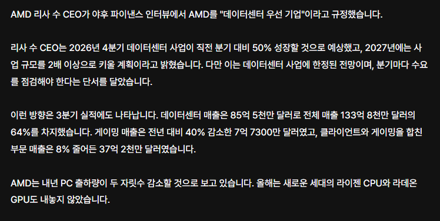

.... 누나 이러면 안되 ㅠㅠ
zen6는 데이터센터용 이란거소리하는거면 개붕이 많이 슬퍼질듯
이제 업글할수있는거라고는 CPU뿐인데 ㅠㅠ
한줄요약 : 리사수 누님이 컴덕이랑 겜붕이들 손절각을 날카롭게 잡고있다 ㅠ

.... 누나 이러면 안되 ㅠㅠ
zen6는 데이터센터용 이란거소리하는거면 개붕이 많이 슬퍼질듯
이제 업글할수있는거라고는 CPU뿐인데 ㅠㅠ
한줄요약 : 리사수 누님이 컴덕이랑 겜붕이들 손절각을 날카롭게 잡고있다 ㅠ
게임 만든다 한적 없는데
님 얘기가 아니었는데 ㅈㅅ 화이팅!
저도 게임보다 코딩이 더 재밌네요..
나도
ㅋㅋ 나도 요즘 게임안하고 코딩만함 ㅋㅋ 그리고 프리섭 파일들 돌아다니는거 줏어다가 최신화 + 개인서버 + 편의성 올려서 테스트하면서 노는중 ㅋㅋ 안할때는 b2b사업 계속 진행중 ㅋㅋ
돈도 안 되고 불만만 많은 버러지들 컷ㅋㅋ
클라우드 게이밍만 좀 잘 짜다오...
3D 로 충분히 다해줬다 ㄹㅇㅋㅋ
내기 이야기 했을텐데 왜와때는 믿으면 안된다 ㅋㅋ
겜 글카 시장 신경 안쓰는 젠슨 황처럼 NTR 당하는 엔딩 펼쳐지겠네 ㅠㅠ...
엔비디아 매출만 봐도 게이밍 한줌단인데 지금 팔아주는것만으로도 고마워해야지 게이밍으로 나가는 칩까지 다 B2B로 돌리는게 더 이득인데
뭐여 zen6 11700x3d 내년초 나오는거 아녔어..?
9800x3d야 평생 가자
그렇게 AM5가 일반소비자용 마지막 소켓이 되었다
누나 우리 좋았잖아....
램알트먼의 말이 현실이 되겠다
이제 컴퓨터는 일반인이 사기 힘들어진듯
어차피 데이터센터 들어갈 다이 랑 개인PC용 다이 랑 같은거 쓸 가능성 높아서
아 시발 다음 세대가 am5 마지막이라길래 그거 기다리고 있었는데 983d 사야하나
원래 x86은 서버로 먹고 사는 시장 이었다는거임
근데 나도 게임보다 바이브코딩이 더 재밋음;;